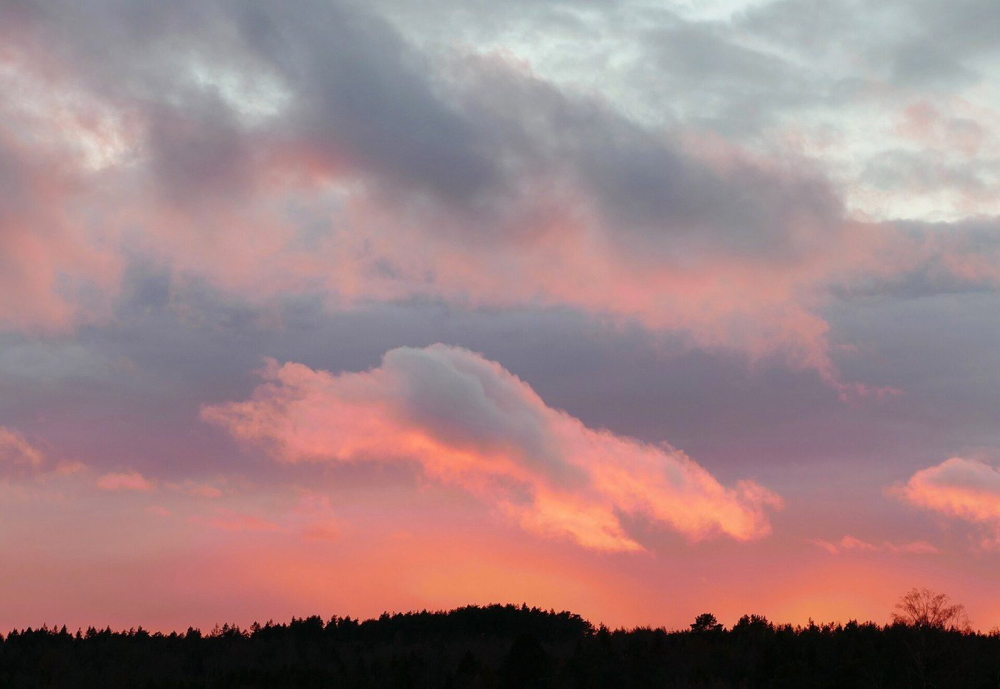
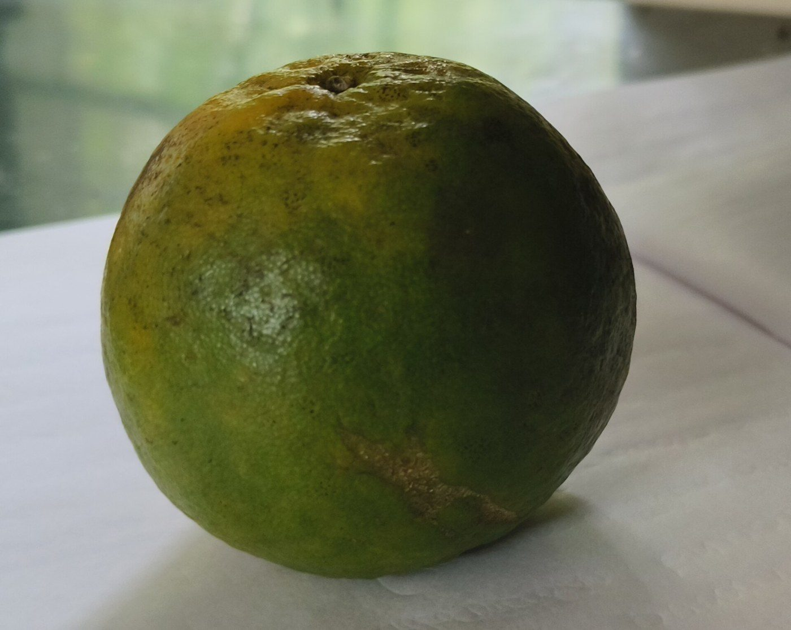

店のこと
ご案内と、図の読みかた
確認できているのは所在地とInstagramだけです。そのほかの内容は準備中です。
フリー素材のイメージ



この図について
配置図の読みかた(三段階)
- 1図を見る上の図は真上から見た形。六つの番号が、外周・一角・側面・左右・中央・先端に散らばっている。
- 2番号を探す丸ではなく四角のしるしに番号を入れ、図のまわりに置いてある。線の先の点が、その部位の位置。
- 3凡例で確かめるホームの凡例で、番号ごとの名前と短い説明が読める。
ゴムボートの題材は制作側の連想で、お店の理念・由来とは無関係です。
フリー素材のイメージ


ご案内
確認できた情報
| 屋号 | haruta bakery(ベーカリー) |
|---|---|
| 所在地 | 〒839-0822 福岡県久留米市善導寺町木塚３０２−１ |
| 電話 | 準備中 |
| 営業時間 | 準備中 |
| 定休日 | 準備中 |
| ご予約 | 準備中 |
| 駐車場 | 準備中 |
| SNS | Instagram @harutabakery |